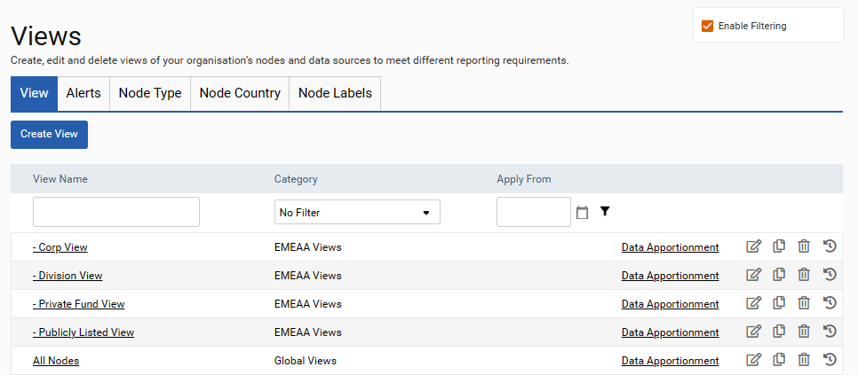
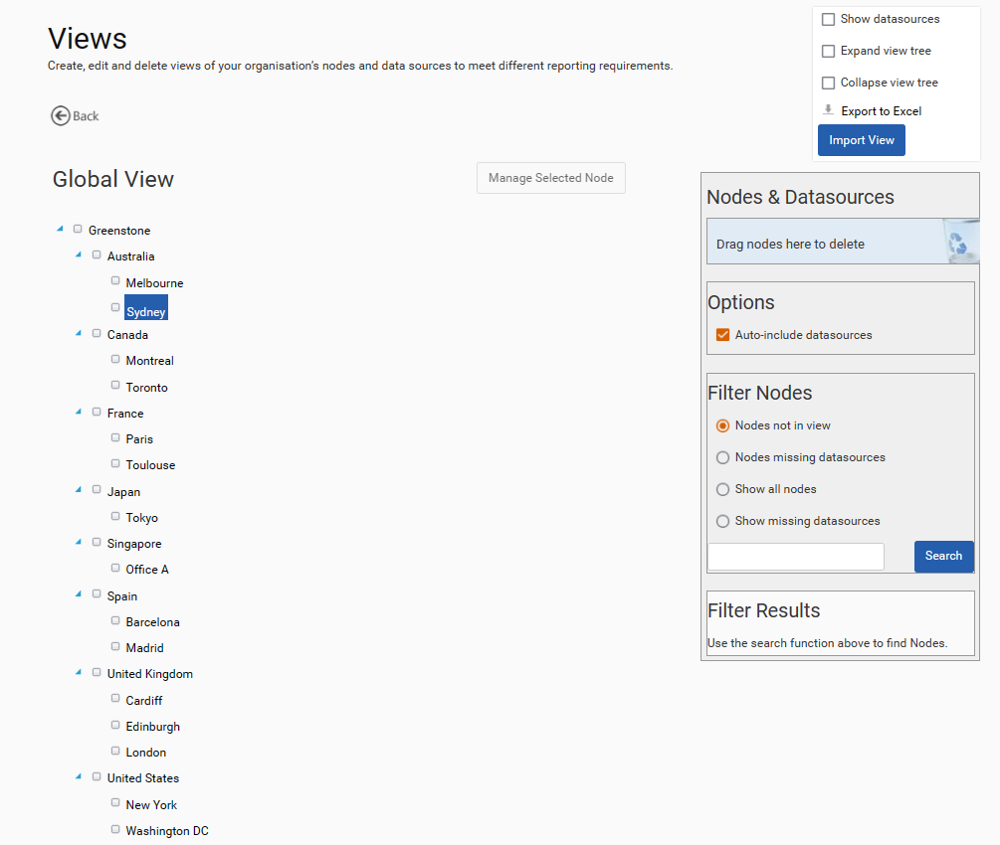
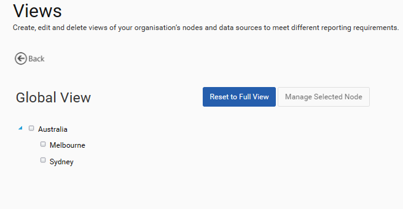
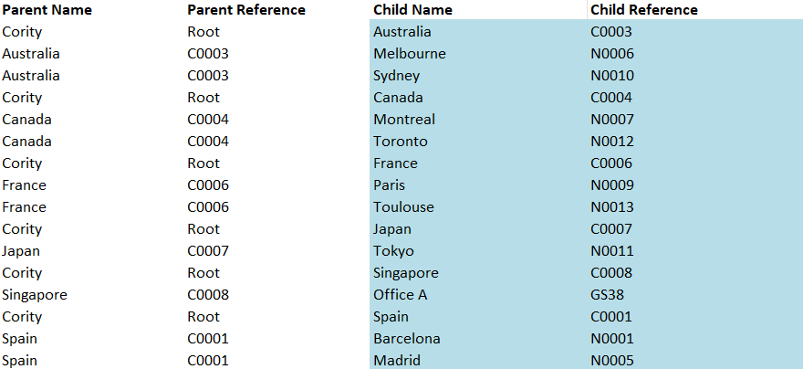
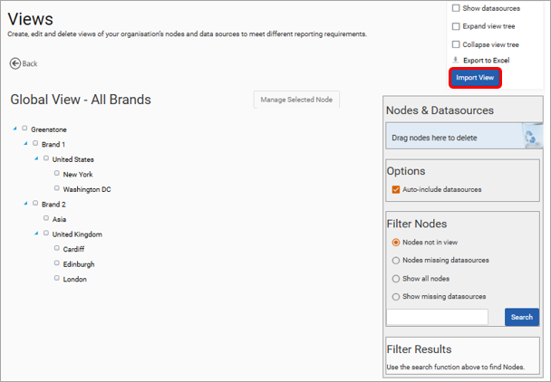

In ‘Admin Settings > Organisation > Views’ you can set up and manage the views in SPM. Views are hierarchical sets of nodes and data sources that can be added, edited and removed to align with different reporting needs (e.g. countries, regions, business units, departments etc.).
To create a view click the Create View button. Give the view a name, description and optionally add a baseline period. This baseline is displayed in various dashboards and reports.
Click the name of a View to edit the contents.

Using the Filter Nodes section, you can search or navigate to find nodes and drag/drop them into the View in the required hierarchy. To remove nodes or data sources from the View, drag them to the ‘Drag nodes here to delete’ area. Hold down the Ctrl button on your keyboard to select multiple nodes to add to or remove from the View.

To amend a view at a particular node, select that node by clicking on the ‘Manage Selected Node’ button. This will result in the selected node always being at the top of the View, making it quicker to make changes.

It is possible to upload a new View or update a current view using a spreadsheet upload. This applies to adding nodes to a view either in a flat or hierarchical structure. To do so, fill in the template shown below and navigate to the Admin Settings > Organisation > Nodes and Data Sources screen and click the view to which you would like to upload.

Click on the Import View button, use the ‘Choose file’ button to select your spreadsheet template and then click on the Upload button to complete your import. If you change your mind, use the Cancel button to exit. Once the view has been uploaded the screen will refresh and then display the view details. Please note, uploading a new view will overwrite the existing structure and this cannot be undone.
